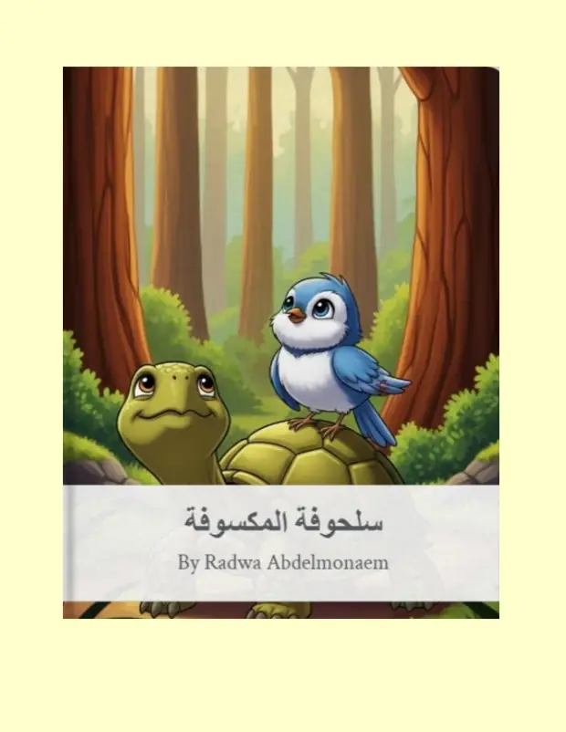
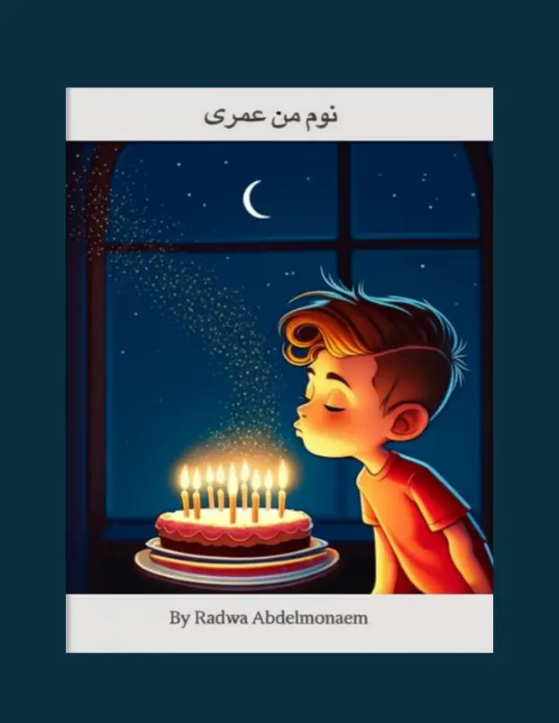
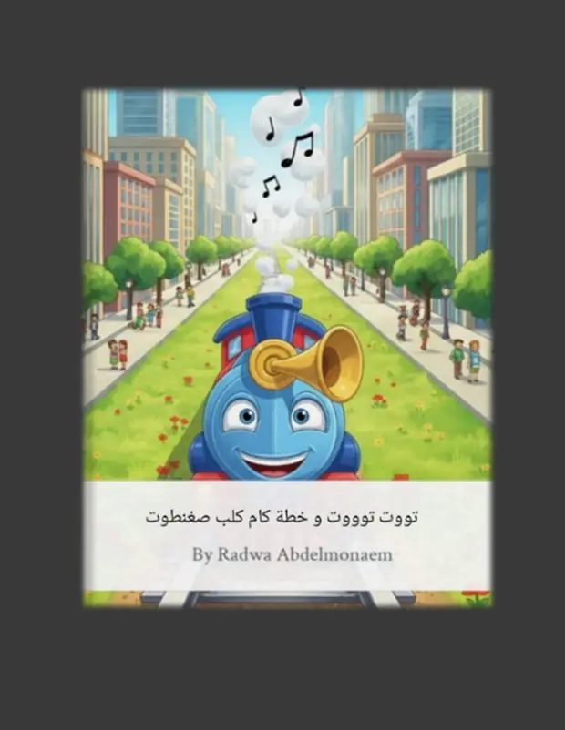
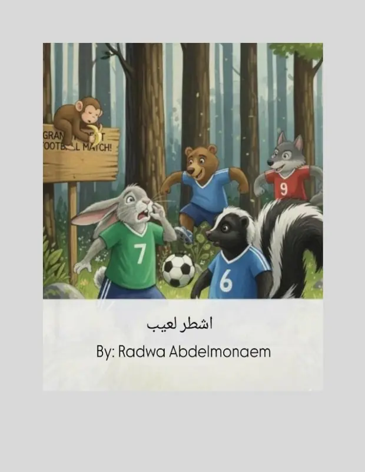
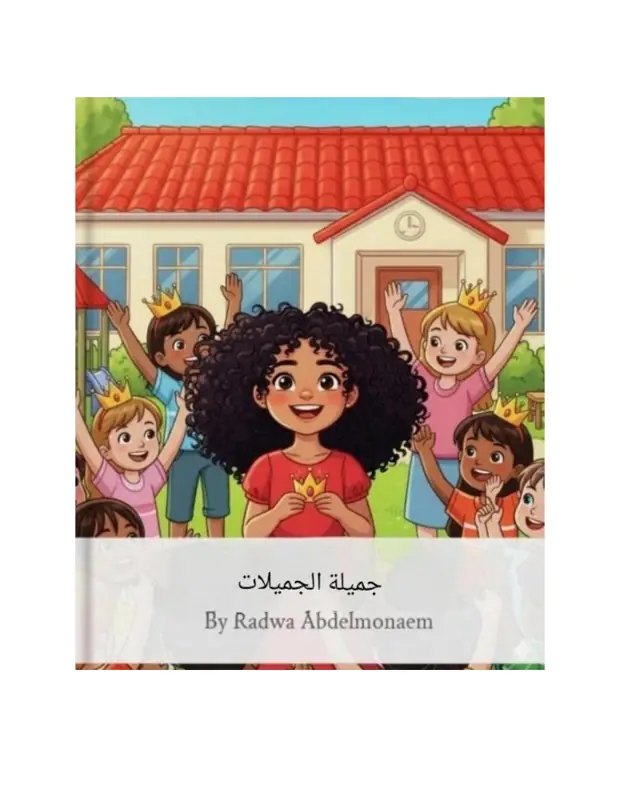
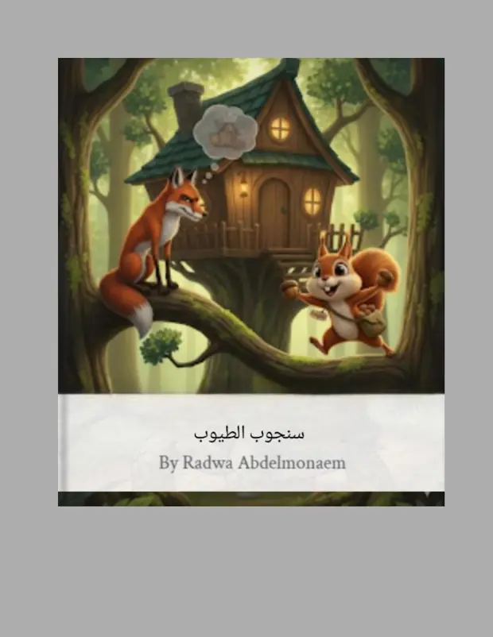

Felfela & The Quiet Storm
A gentle emotional fable about a rescued dog, a loving girl, and the patience needed to make safety feel believable again.
Healing
Compassion
Safety
Stories, reflections, and illustrated worlds
A graceful home for tender adult fiction and playful Arabic children's stories, designed with softness, clarity, and room for every new chapter.
Featured
The portfolio now opens with a warmer editorial feeling again, but uses compressed WebP covers so the first impression stays light.
A gentle emotional fable about a rescued dog, a loving girl, and the patience needed to make safety feel believable again.
Collected works
The works are grouped by audience and language so readers can find the right mood quickly.
Stories for adults
Tender, layered pieces about family, memory, fear, care, and the interior lives people carry quietly.
قصص عربية للأطفال
رف مخصص للقصص العربية المصورة، بتفاصيل أوضح واتجاه قراءة مناسب للأطفال والعائلة.
مغامرة خيالية خفيفة بروح مرحة تناسب القراءة العائلية.



مغامرة مرحة عن خطة صغيرة وحماس كبير وروح اللعب.



About the voice
Radwa writes stories that notice the quiet parts of people: the fear behind anger, the tenderness behind care, and the brave little choices that help a heart feel safe again.
Her adult stories lean into emotion, family, healing, and allegory. Her children's stories keep a playful rhythm while still carrying a clear value, whether confidence, kindness, imagination, or self acceptance.
Contact
Reach Radwa directly for writing opportunities, story feedback, publishing conversations, or new collection updates.
radwa.abdelmonaem@gmail.com